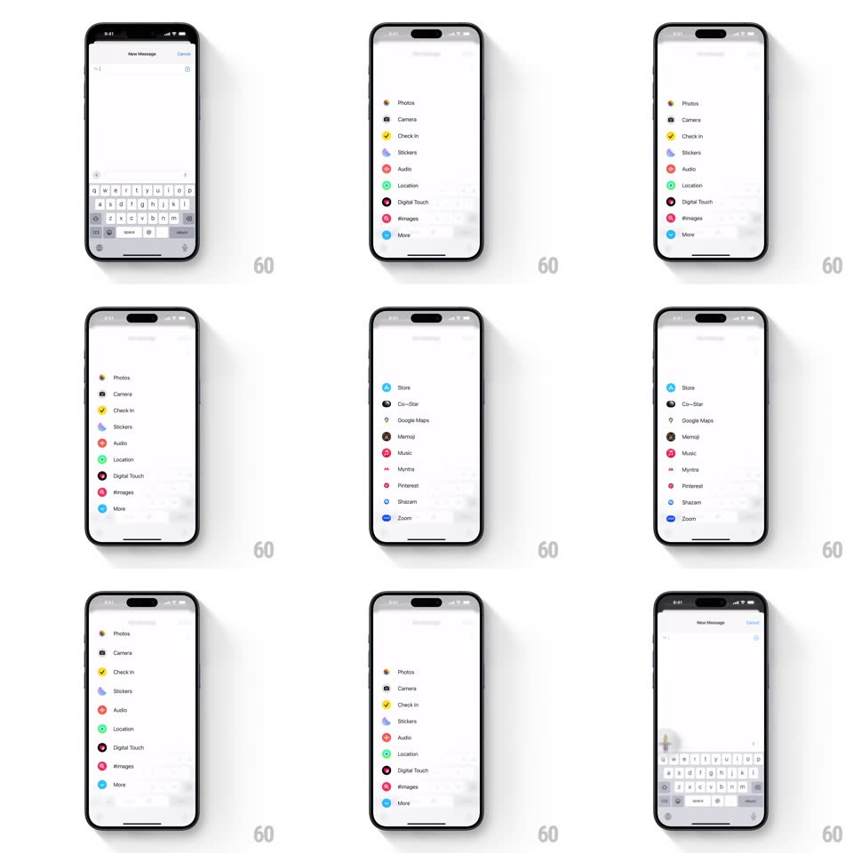

Media
Frame-by-frame

Rebuild this interaction 1:1: iMessage's + menu - tapping the plus replaces the keyboard with a springy sheet of colorful circular app icons (Photos, Camera, Check In, Stickers, Audio, Location, Digital Touch, #images, More) that slide up with a stagger, and scrolls into an installed-apps list.

Rebuild this interaction 1:1: iMessage's + menu - tapping the plus replaces the keyboard with a springy sheet of colorful circular app icons (Photos, Camera, Check In, Stickers, Audio, Location, Digital Touch, #images, More) that slide up with a stagger, and scrolls into an installed-apps list. ## Integration Integration: stack-agnostic spec - springs given as stiffness/damping, timed motions as duration + curve; map every value to your framework and animation library of choice. ## Scene New Message screen, keyboard up. After tapping +: a sheet the height of the keyboard listing rows with large circular gradient icons and labels. Below the fold: Store and third-party app rows (Co-Star, Google Maps, Memoji, Music, ...). ## Motion spec Pattern: keyboard-replacement sheet with staggered row entrance. - Tap +: the keyboard slides down while the menu sheet slides up in the same motion (spring ~340/24) - the handoff is seamless, both surfaces sharing the exact keyboard height. - Menu rows stagger in bottom-to-top: each row fades + rises 20px (280ms, 35ms apart) with its icon popping slightly (scale 0.8 -> 1, spring ~420/20). - The conversation above dims and compresses a few percent as the sheet arrives - focus shifts down. - Scrolling the sheet: rows under standard scroll physics; the header row of the conversation stays pinned. - Selecting a row: icon dips (scale 0.92, 120ms) and the sheet transitions into that app's flow; tapping the composer's text area reverses the whole sequence - sheet down, keyboard up, same spring. ## Calibration - The sheet occupies exactly the keyboard's frame - the swap feels like the keyboard changed its mind, not like a new screen. - Icons are large (~36px circles) and brightly colored - the menu reads at a glance. ## Reduced motion Sheet and keyboard crossfade; no row stagger. ## Don't miss - It's a replacement, not an overlay: keyboard and sheet never coexist on screen. - The stagger is bottom-to-top - the rows nearest the thumb arrive first.